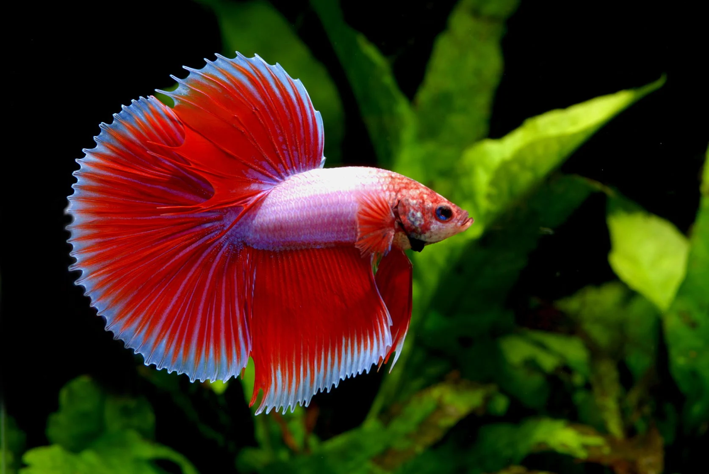

Descripción de su hábitat y estilo de vida:
Oriundos de la cuenca Mekong en el sureste asiático, estos peces abundan generalmente en aguas de lento movimiento como arroyos pequeños, charcos y arrozales. En éste último, algunas especies llegan a ser criadas por los propios campesinos para su consumo. los peces Betta pueden presentar características omnívoras o herbívoras. Como parte del medio en el que se desenvuelven, estos peces son capaces de alimentarse de mosquitos, pequeñas larvas, gusanos y zooplancton. En ambientes artificiales, la presencia de productos cárnicos variados en su dieta repercute directamente en la pigmentación de su piel, alcanzando tonalidades más vivas y hermosas.
Características: